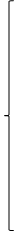
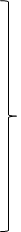

This rule is needed to account for a handful of stems which behave as continuant-initial stems in some contexts but show a surface initial stop word-initially or directly after an inflectional prefix. This type is similar to that discussed in connection with Lenition P-16, but differs in that the reduplication pattern presupposes the initial continuant, so that we need a later rule converting the continuant to the paired stop.
An example is /dhamungur/ 'short', reduplicated Pl /dhama-lhamungur/ The bisyllabic -Rdp- segment presupposes a base //lhamungur// with initial continuant, since Initial Reduplication P-2 produces a monosyllabic pattern with stem-initial stop. When a compound initial or derivational prefix is present, the forms are Sg /-lhamungur/ and Pl /-lhama-lhamungur/ though the initial /lh/ is subject to subsequent conversion to /dh/ if preceded by a stop or nasal, by Hardening P-18. In uncompounded and underived position, the forms /dhamungur/ and /dhama-lhamungur/ do not have initial /dh/ due to Hardening P-18 but behave like underlying /dh/ specifically, they induce ngu-Insertion P-1 under the same conditions as true stop-initial stems. We therefore need an early rule applying to selected stems, such as /lhamungur/ converting the //lh// into /dh/ when not preceded by a compounding/derivational element; this special rule follows Initial Reduplication P-2 but precedes later rules such as ngu-Epenthesis P-1. An ex. is /na-ngu-dhama=lhamungur/ 'you and I will be short', illustrating both P-2 and P-1.
| (P-19) | Leftward Hardening (for a few stems only) | ||
|  | w2 → b |  | // # (inflect. prefix)-__ |
| 1h → dh | |||
| y → j | |||
In principle, we expect the rule also to involve //w1// → /g/ and //r// → /d/ by analogy to Hardening P-18 and Lenition P-16. However, P-19 is known to apply to a handful of stems only, and we cannot cite exx. involving these particular changes. The stems affected by P-19 are these (but see also §7.22):
| /=w2ara / | / bara/ | 'to become bent/crooked' |
| /=w2ilwila / | / bilwila-/ | 'to sway' |
| /lhamungur/ | /dhamungur/ | 'short' |
Although I take the form with continuant as underlying, the dictionary lists these items under the variant with stop, since the latter is perhaps the more salient form (the form with continuant is given with a cross-reference to the other form).
An additional stem, now frozen, is a probable further ex. historically: /jarmayarmaj/ in compounds/derivatives /-yarmayarmaj/ 'long, tall'. Even the simple form appears to be historically a reduplication. However, this form is now frozen and a new reduplicated Pl /ja-jarmayarmaj/ is attested, forcing us to consider this a case of Lenition P-16.